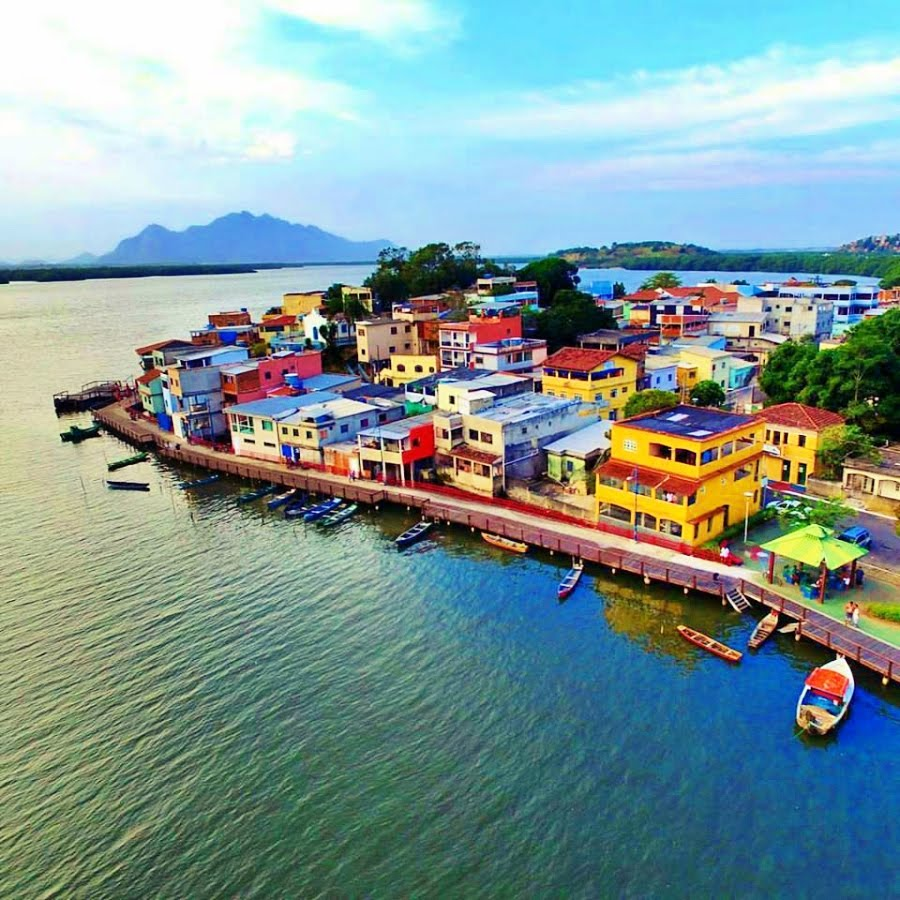
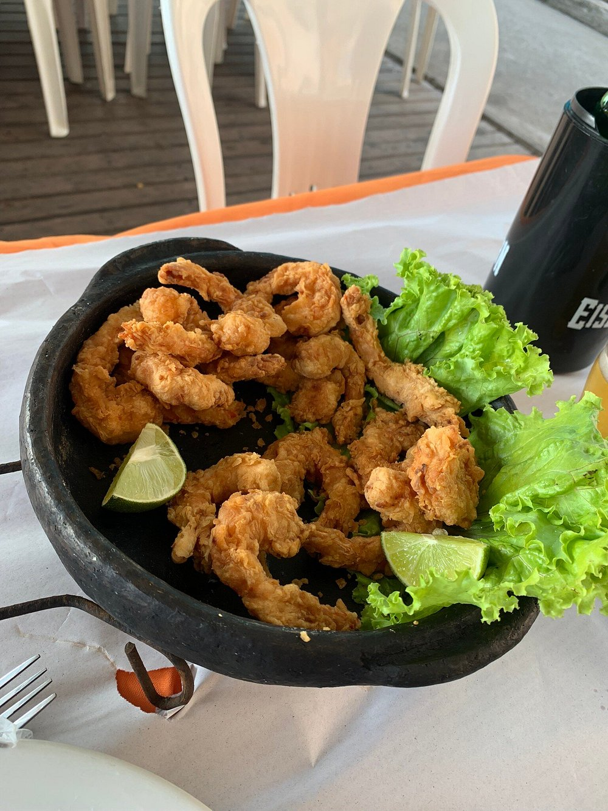

Vitória
Vitória, a capital do estado do Espírito Santo, é uma cidade encantadora e repleta de atrativos turísticos, com uma localização privilegiada entre as águas da baía de Vitória e o Oceano Atlântico. A cidade é um importante centro cultural, econômico e histórico do estado, e se destaca por suas praias, gastronomia diversificada, e riqueza cultural. Como um dos destinos turísticos mais visitados do Espírito Santo, Vitória atrai turistas pela sua mistura de modernidade com tradição, natureza exuberante e uma atmosfera acolhedora.
Além de ser um importante polo comercial e portuário, a cidade oferece inúmeras opções de lazer, incluindo praias tranquilas, trilhas, e uma intensa vida noturna. A arquitetura histórica, como o Casarão de Viana, o Mercado Municipal e as igrejas centenárias, reflete a rica herança colonial da cidade. Vitória também é conhecida pela sua gastronomia à base de frutos do mar e pratos típicos, que atraem turistas e moradores durante todo o ano.
Principais pontos turísticos
- Praia de Camburi
- Ilha das Caieiras 
- Convento da Penha
- Parque Pedra da Cebola
- Palácio Anchieta
A Praia de Camburi é a mais famosa e movimentada da cidade. Com mais de 6 km de extensão, é ideal para atividades ao ar livre, como caminhada, corrida e passeios de bicicleta. A praia tem uma vista deslumbrante da baía e é rodeada por bares e restaurantes, oferecendo uma excelente infraestrutura para os turistas.
A Praia de Camburi é um ponto turístico essencial para quem visita Vitória, sendo um local de lazer, descanso e diversão para moradores e turistas, além de ser o coração da vida social da cidade.
A Ilha das Caieiras é uma área tranquila e charmosa, famosa por suas paisagens naturais e pela cultura tradicional dos pescadores locais. A região é ideal para quem deseja conhecer de perto o cotidiano da comunidade pesqueira, além de oferecer a possibilidade de saborear pratos à base de frutos do mar, especialmente a moqueca capixaba.
A Ilha das Caieiras é um dos lugares mais autênticos de Vitória, oferecendo aos turistas uma imersão na cultura local e uma experiência gastronômica única.
O Convento da Penha é um dos mais importantes santuários religiosos do Espírito Santo e um dos principais pontos turísticos de Vitória. Localizado no alto de uma colina, o convento oferece uma vista panorâmica da cidade e da baía de Vitória. A igreja foi fundada no século XVI e é um local de peregrinação para muitos fiéis.
O Convento da Penha é um símbolo religioso de Vitória e do Espírito Santo, sendo também um importante ponto turístico devido à sua história, arquitetura e vista espetacular.
O Parque Pedra da Cebola é umas das áreas verdes mais belas de Vitória. É um local cercado pela natureza, para respirar um pouco de ar puro, fazer uma caminhada ou esticar uma canga na grama verdinha e relaxar.
No parque ainda há um lago, um jardim oriental e um mirante com uma bela vista.
O Palácio Anchieta é um dos edifícios mais históricos e imponentes de Vitória. Construído no século XVI, ele já foi sede do governo do estado e abriga atualmente a Assembleia Legislativa. O palácio é um excelente exemplo da arquitetura colonial portuguesa e um importante marco histórico de Vitória.
O Palácio Anchieta é um ponto turístico fundamental para quem deseja conhecer a história política e arquitetônica de Vitória. Sua beleza e importância histórica fazem dele um dos locais mais visitados da cidade.
Principais pontos gastronômicos
- Restaurante Caieiras 
- Localização: Ilha das Caieiras.
- Restaurante Ilha do Caranguejo
- Localização: Jardim Camburi.
- Kiosque do Alemão
- Localização: Enseada do Suá.
- Bilac Bar
- Localização: Praia do Canto.
Famoso pela autêntica moqueca capixaba, o Restaurante Ilha das Caieiras é um dos locais mais tradicionais da cidade para experimentar a culinária local. O restaurante oferece uma vista encantadora da baía e um ambiente acolhedor, perfeito para um almoço à beira-mar.
O restaurante é uma excelente escolha para quem deseja experimentar pratos típicos do Espírito Santo, especialmente a moqueca capixaba, um prato emblemático da culinária local.
Que tal conhecer o Restaurante Ilha do Caranguejo? Como o nome sugere, o caranguejo é a grande estrela da casa. Essa é a chance de experimentar uma caranguejada e a legítima moqueca. Esses e outros pratos da culinária capixaba são servidos em porções generosas que servem duas pessoas.
O diferencial do local é o ambiente: alegre e descontraído, com decoração temática e bom atendimento.
Um dos mais tradicionais da região. O Alemão (Olinto Lauret), descendente de Holandeses e Alemães, foi um dos primeiros comerciantes na praia da Curva da Jurema no ano de 1978 aonde fazia suas vendas em uma Kombi. Com o passar dos anos o comércio cresceu e passou a ser feito em trailers, onde o carro-chefe das vendas era o Peroá frito e o torresmo com aipim.
Em 1996 em uma parceria entre a Vale e a prefeitura de vitória, a orla foi urbanizada e foram construídos os nove quiosques. Hoje o restaurante é comandado por familiares do já falecido fundador. O carro-chefe é o arroz de polvo.
O Bilac é um bar das antigas que está há mais de 30 anos no Triângulo das Bermudas. É um bom lugar para reunir os amigos, jogar conversa fora e assistir a uma partida de futebol com uma cerveja trincando do lado.
Para acompanhar, aposte na clássica casquinha de siri, no pastelzinho de tilápia ou na picanha com aipim à moda da casa.
Principais pontos culturais
- Museu de Arte do Espírito Santo (MAES)
- Localização: Centro de Vitória.
- Teatro Carlos Gomes
- Localização: Centro de Vitória.
- Festa da Penha
- Localização: Vitória e Vila Velha.
- Centro Cultural Sesc Glória
- Localização: Centro de Vitória.
O MAES é um importante centro cultural da cidade, abrigando um acervo de arte moderna e contemporânea, com obras de artistas locais e nacionais. O museu realiza exposições temporárias e eventos culturais.
O MAES é um ponto obrigatório para quem deseja conhecer a produção artística do Espírito Santo, além de ser um local de valor cultural e educacional.
O Teatro Carlos Gomes é um dos principais teatros de Vitória e da região, conhecido pela sua programação diversificada, que inclui peças teatrais, musicais e apresentações de dança.
É um importante centro cultural e de entretenimento da cidade, oferecendo uma programação rica e variada para todos os públicos.
A Festa da Penha é uma das maiores e mais tradicionais celebrações religiosas do Espírito Santo. Realizada anualmente, a festa celebra a padroeira do estado, Nossa Senhora da Penha, com procissões, missas e eventos culturais, atraindo milhares de turistas.
A Festa da Penha é uma das mais importantes manifestações culturais e religiosas da cidade, reunindo fé, tradição e cultura de maneira única, sendo um evento imperdível para quem visita Vitória.
O Centro Cultural Sesc Glória oferece uma programação cultural diversificada, incluindo teatro, música, dança e exposições de arte. O centro está localizado em um edifício histórico e proporciona aos visitantes uma experiência imersiva na cultura local.
É um espaço importante para a difusão cultural de Vitória, com eventos de grande relevância para a cena cultural da cidade.